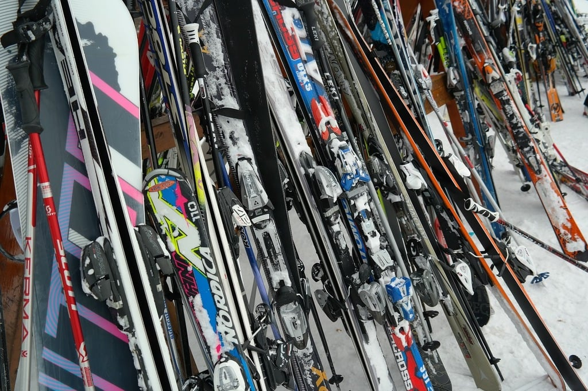

Before practice the team will meet at the Cortina lift to meet coaches. As the weather gets colder the team will meet in front of the wprc training center. The coaches will split the kids into groups by ages. Every practice session is two hours then a break for lunch, and two more hours after that. There will be no reminder to return to practice so keep an eye on the time to redress and head out to practice. Practice is held Saturday and Sunday, during the week there is practice on Wednesdy from 5:30 to 7:30. Practice can either be GS or Slalom, the coaches will specify which at least a day before practice. The director of the club sends each coach the plans for the next practice then your coach takes that and give the information to you so you can prepare for practice.
Each person should bring at least two layers of thermal underwear, a team issued ski coat, snow pants, ski boots,ski poles, and skis. It would be wise to have multiple layers incase you start to sweat or the temperature changes. The cafe serves pretty expensive food so you should bring your own. There will be no warm up breaks unless it is below zero, so dress acordingly.